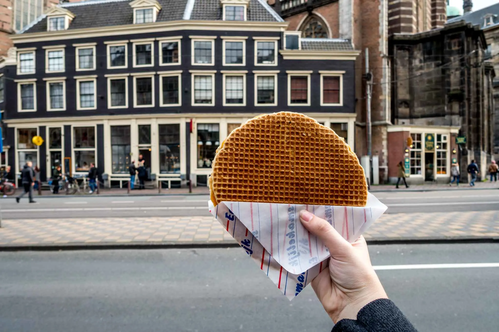
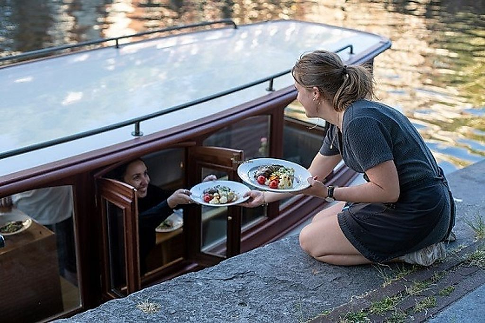

Explore Amsterdam's Culinary Delights

Try Dutch Street Food
Taste traditional Dutch snacks like stroopwafels, bitterballen, and fresh herring from street vendors.

Dine by the Canals
Enjoy a romantic meal at one of Amsterdam's scenic canal-side restaurants with stunning views.

Explore Food Markets
Visit popular food markets like Albert Cuyp and indulge in international cuisines and fresh produce.